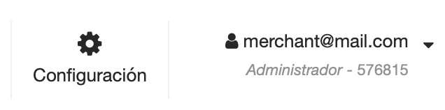
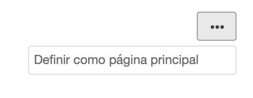
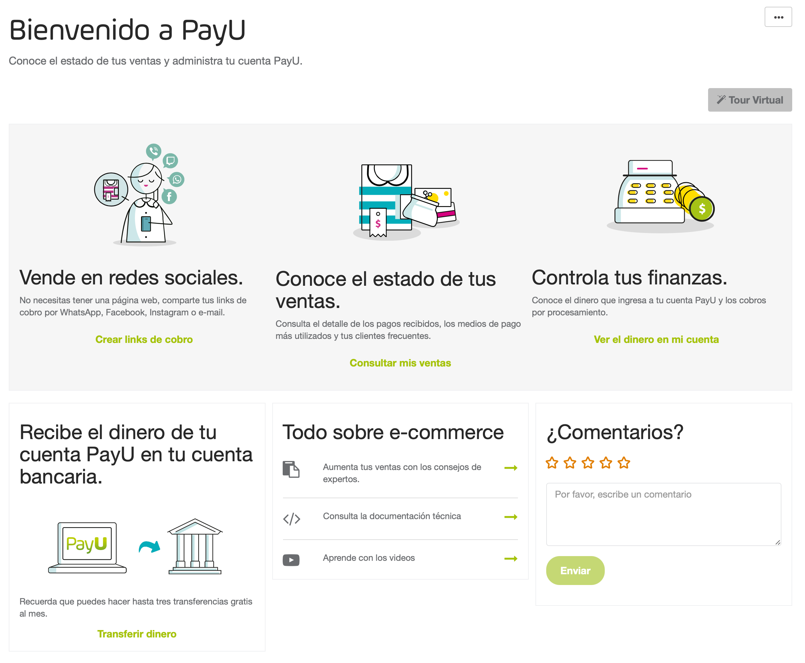

Actualizar mi información
Aprende cómo cambiar tu contraseña, actualizar tus preferencias de usuario, cambiar el logo de tu comercio y solicitar el cambio de tus Datos bancarios.
En esta página
Antes de empezar a explicar cómo está organizado el modulo PayU, necesitas lo siguiente:
El módulo PayU está dividido en cuatro grupos principales:
Este panel tiene las opciones requeridas para manejar las cuentas asociadas al comercio actual. En este panel encuentras las siguientes opciones:
| Opción | Subopción | Disponible en | Descripción |
|---|---|---|---|
| Merchant ID | Número de identificación de tu comercio en el sistema de PayU. Este identificador es requerido cuando utilizas Integraciones. | ||
| Cuenta | Información de la cuenta | Muestra en nombre e identificador de la cuenta seleccionada. Esta opción también le permite cambiar la cuenta y realizar operaciones relacionadas. Haz clic en el simbolo ▾ para encontrar estas opciones o cambiar la cuenta.  |
|
| Datos de mi negocio | Muestra la ubicación y la información de contacto principal de su negocio. Además, esta opción muestra las personas asociadas con su negocio. | ||
| Datos de ventas | Muestra la información de cómo realizas tus ventas, qué vendes, el logo de tu tienda, información de entrega, cómo ofreces tus productos o servicios y cómo tus clientes pueden contactarte. | ||
| Datos bancarios | Muestra la cuenta bancaria y el banco intermediario donde desea transferir los fondos recaudados para esta cuenta. | ||
| Cuentas creadas | Muestra la lista de cuentas disponibles en su comercio. | ||
| Saldo disponible | Muestra el saldo disponible en la cuenta seleccionada. | ||
| Inicio | Muestra la página de bienvenida del módulo PayU. Para más información, consulta la página de Inicio. | ||
| Transacciones | Reporte de ventas | Revisa el detalle de los pagos recibidos, incluyendo métodos de pago más utilizados y clientes frecuentes. Para más información, consulta Reporte de ventas. | |
| Disputas | Gestiona el proceso de disputas generadas en tu cuenta PayU. Para más información, consulta Disputas. | ||
| Balance financiero | Te permite entender el flujo de dinero de tu cuenta, los cargos aplicados, las tarifas relacionadas y los impuestos. Para más información, consulta Balance financiero. | ||
| Certificado de Retenciones |  |
Descarga tu Certificado de Retenciones de acuerdo con el periodo de tiempo seleccionado. Para más información, consulta Certificado de Retenciones. | |
| Reporte de operaciones |  |
Descarga los reportes de operaciones sugeridos por la CNBV de acuerdo con un mes seleccionado. Para más información, consulta Reporte de operaciones. | |
| Transferencias | Transferencias |     |
Te permite transferir los fondos recolectados en tu cuenta PayU a tu cuenta bancaria. Para más información, consulta Transferencias. |
| Programar transferencia | |
Te permite crear transferencias diarias, semanales o mensuales. Además, puedes configurar transferencias personalizadas. Para más información, consulta Programar transferencias. | |
| Transferencias diarias |  |
Como PayU en Brasil no es una institución de pago, los fondos recaudados en tu cuenta PayU se transfieren a tu cuenta bancaria diariamente. A través de este reporte, puedes conocer el estado de las transferencias diarias. Este reporte solo está disponible para cuentas en Brasil y tiene las mismas columnas y opciones que el reporte Transferencias. |
|
| Editar datos bancarios | Te permite solicitar el cambio de tu cuenta bancaria y el banco intermediario donde vas a transferir los fondos recolectados en esta cuenta. Para más información, consulta Actualizar mi información | ||
| Cobra con PayU | Cobra en internet | Te permite crear solicitudes de pago para que puedas cobrarle a tus clientes sin tener una página Web. Para más información, consulta Solicitud de pago | |
| Cobros en efectivo | |
Te permite generar cupones de pago o tarjetas de cobranza* con la información necesaria para permitirle a tus clientes hacer pagos en efecto las veces que lo requieran en los puntos de pago disponibles. Para más información, consulta Cupones de pago. *Las tarjetas de cobranza solo están disponibles en Argentina. |
|
| Mis herramientas | Te permite encontrar y administrar la información de los Links de pago (Solicitud de pago) y Cupones de pagoCupones de pago* que hayas creado en tu cuenta. *Cupones de pago solo están disponibles en Argentina y Colombia. |
Este panel tiene las opciones requeridas para administrar tu comercio y tu usuario.
Esta opción te permite administrar usuarios, permisos, perfiles y la configuración de tu comercio. Al hacer clic en el botón Configuración, encuentras las siguientes opciones:
| Opción | Disponible en | Descripción |
|---|---|---|
| Gestión de usuarios | Te permite otorgar acceso a los miembros de tu equipo para que puedan solicitar pagos en línea o validar información de los pagos. Para más información, consulta Gestión de usuarios. | |
| Perfiles y permisos | Te permite create custom profiles with specific permissions. En esta sección, puedes consultar los permisos predeterminados incluidos en el Módulo PayU. Para más información, consulta Gestión de perfiles y permisos. |
|
| Configuración técnica | En esta opción, puedes encontrar las variables requeridas para integrar PayU con tu página Web. Además, puedes configurar notificaciones de pagos procesados y Disputas. Para más información, consulta Configuración técnica. |
Esta opción te permite administrar tu perfil. En la vista principal de esta opción, encuentras tu correo electrónico, tu perfil actual en el módulo PayU (para la cuenta actual), y el account Id; haz clic en el símbolo ▾ para mostrar las configuraciones de usuario disponibles.
| Opción | Descripción |
|---|---|
| Cambiar comercio | Esta opción está disponible cuando tu usuario está enrolado a más de un comercio. |
| Mi perfil | En esta opción, puedes configurar tus preferencias y actualizar tu contraseña. |
| Cerrar Sesión | Esta opción cierra la sesión del usuario activo. |
Este panel panel carga la opción seleccionada en el panel de la izquierda o en la opción de la parte superior. La página Inicio está seleccionada por defecto, por lo que se carga tan pronto inicias sesión en el módulo PayU.
Para configurar una opción para que see muestre por defecto, haz clic en el menú de los tres puntos en la esquina superior derecha y selecciona Definir como página principal.
La página de inicio es el punto de partida del Módulo PayU. Muestra los atajos para realizar ventas en línea, saber el estado de tud ventas, controlar tus finanzas, transferir fondos, aprender sobre comercio electrónico y dejarnos comentarios.

En esta página, puedes también tomar un tour utilizando el botón de Tour Virtual. Este botón te lleva a través de las opciones principales para administrar tu cuenta.
El pie de página muestra el número de teléfono para contactarnos y el enlace para leer los terminos y condiciones de acuerdo con el país de procesamiento.
Los siguientes son los números y hora de contacto:
(+5411) 598 42132 > Lun - Vie 09:00 - 22:00 (UTC -3:00) (+5511) 4130 5311 > Lun - Vie 09h a 18h / Sab 09h a 15h - Zona horaria de Brasilia (UTC -3:00) (+562) 258-13949 > Lun - Vie 8:00 - 21:00 Hora chilena (+57) 601 654 0721 > Lun - Vie 7:00 - 20:00 Hora colombiana (UTC -5:00) (+5255) 474 11439 > Lun - Vie 7:00 - 20:00 Hora CDMX (+507) 836 5577 > Lun - Vie 7:00 - 20:00 Hora colombiana (UTC -5:00) (+511) 708 5381 > Lun - Vie 7:00 - 20:00 Hora peruana (UTC -5:00)Aprende cómo cambiar tu contraseña, actualizar tus preferencias de usuario, cambiar el logo de tu comercio y solicitar el cambio de tus Datos bancarios.
Encuentra aquí todos los detalles que te ayudarán a integrar tu página web usando cualquiera de nuestras integraciones.